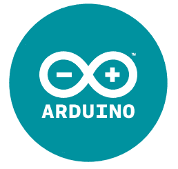

Introduksjon
Arduino er en mikrokontroller som kan programmeres til å styre elektroniske dingser og duppeditter. Ved hjelp av en Arduino kan du skru av og på lyset på rommet ditt når noen åpner døren, sende melding til datamaskinen din hvis det blir kaldt eller vanne plantene dine automatisk når du er borte. Det er kun fantasien som setter grenser for hva en Arduino kan gjøre!
Her skal vi programmere Arduinoen til å få et lys til å blinke. For å gjøre denne oppgaven trenger du en Arduino, som er vist på bildet.

Steg 1: Installere programvaren
Det første vi må gjøre er å installere programvaren som lar oss programmere Arduinoen. Vent med å koble til Arduinoen til etter du er ferdig med installasjonen.
Sjekkliste
- 
Steg 2: Studere Arduino-brettet
La oss bli kjent med Arduino-brettet. Under ser du Arduino-brettet. Finn frem din Arduino og studer den!
Sjekkliste
Steg 3: Lag en krets
Nå skal vi lage vår første krets på en Arduino.
Dette trenger du
Sjekkliste
Om koblingen
Nå har vi koblet vår første krets. Hvis du studerer koblingen, vil du se at det er en lukket krets. Det vil si at strømmen går fra pluss til minus gjennom kretsen:
- Fra digital 8 (pluss).
- Gjennom motstanden.
- Gjennom lysdioden.
- Til GND (minus).
Port 8 som er tilkoblet den røde ledningen er en digital port. Denne porten kan vi programmere slik at lysdioden blinker. Da vil den fungere som en lysknapp.
Den fargerike klumpen er en motstand. Denne begrenser strømmen, slik at vi ikke ødelegger lysdioden.
Steg 4: Få lysdioden til å blinke
Nå er det på tide at vi koder litt! Det første programmet skal blinke med lysdioden.
Sjekkliste
-
void setup(){ } void loop(){ } -
int led = 8; void setup(){ pinMode(led, OUTPUT); } void loop(){ digitalWrite(led, HIGH); delay(1000); digitalWrite(led, LOW); delay(1000); }
Virker det ikke?
Hvis det ikke virker, så kan det hende at Arduino-programmet står på feil port og/eller brett. Da kan du sjekke disse to tingene:
-
Brett er satt riktig: Tools -> Board -> Arduino/Genuino Uno
-
Port er satt riktig:
- Windows: Tools -> Port -> COM1 (kan være et annet tall)

- Mac: Tools -> Port ->/dev/tty.usbmodem262471 (kan være et annet tall)
- Windows: Tools -> Port -> COM1 (kan være et annet tall)
-
Lysdioden er koblet riktig vei
- Den korteste "foten" skal gå til GND
Hvis dette ikke fungerer, kan du prøve å lukke programmet og åpne det igjen.
Utfordringer
Hva er void setup() og void loop()?
Lurer du på hva void setup() og void loop() er?
void setup() er kode som kjøres en gang når Arduinoen slås på. Der skriver du
oppstartskode, slik som å bestemme om en port skal være inngang eller utgang.
void loop() er kode som kjøres på nytt og på nytt, altså repeteres evig. Lurte
du på hvorfor lampen blinket mer enn én gang? Det fordi Ardiuno-brettet starter på
toppen i void loop() rett etter den er ferdig med slutten på void loop().
Hva er led?
Noe av det første som står i koden er:
int led = 8;
LED står for Light Emitting Diode, eller lysdiode på norsk. Linjen lagrer tallet 8
til variabelen led, som er heltall (integer på engelsk). Da kan vi senere
bruke led i pinMode:
pinMode(led, OUTPUT);
Og i digitalWrite:
digitalWrite(led, HIGH);
Dette er fint hvis vi senere ønsker å bytte utgang. Da trenger vi bare å endre
en linje, istedenfor alle linjene vi nå bruker led.
Husk at du alltid må bruke ; på slutten av hver kodelinje!
Steg 5: Legg til en knapp
Nå skal vi skru av og på lampen med en knapp! Vi har nå lært hvordan vi kan få en lampe til å blinke. Neste steg er derfor å skru lampen av og på med en knapp!
Sjekkliste
-

-
int led = 8; int knapp = 7; void setup(){ pinMode(led, OUTPUT); pinMode(knapp, INPUT_PULLUP); } void loop(){ if(digitalRead(knapp) == LOW){ digitalWrite(led, HIGH); } else { digitalWrite(led, LOW); } }
Se der! Nå har du lært å lage enkle kretser med Arduino!
Utfordringer
Her er noen nøtter du kan prøve deg på ved å endre koden.
-
Hva skjer om
50endres til et større tall?Merk: Lysdioden må være tilkoblet en port som har PWM (port med følgende tegn: ~) for at
analogWriteskal fungere.